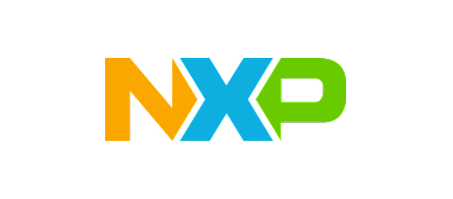
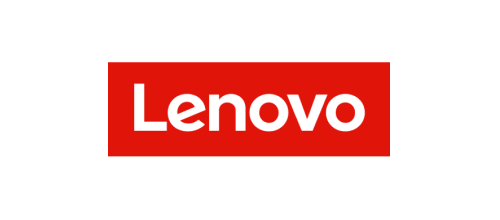
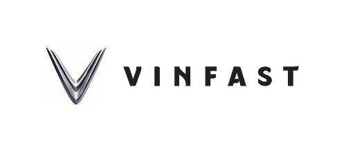

AI + NocoBase构建可靠的业务系统 Build reliable business systems



AI 写代码很快， AI writes code fast. 但企业要的是长期可靠的系统。 Enterprises need systems they can rely on for years.
Agent 写代码、做执行 Agents code and execute
NocoBase 提供底座和流程 NocoBase lays the rails
人来做决策 Humans decide
NocoBase Core
让 Agent 专心写业务， Let agents focus on your domain. 通用底座已经就绪。 The foundation is ready.
历经真实生产考验 Proven in production
贴合复杂业务细节 Built for business depth
插件化扩展，底座独立升级 Plugin-based, clean upgrades
NocoBase Studio
让团队专心做决策， Let your team focus on decisions. 执行交给 Agent 团队。 Agents handle the execution.
我的任务 My Tasks
商机阶段看板 Deal stage board
接入多路 Agent，7×24 小时并行。 Run multiple agents in parallel, 24/7.
运行环境 Runtimes
不懂代码的业务专家，也能主导开发。 Domain experts can lead the build without writing code.
供应商分级 Supplier tiering
不是 Vibe Coding，是受治理的工程。 Governed engineering, not vibe coding.
客户导入去重 Dedupe customer imports
技能：统一开发规范 Skills set the standard
知识库：共享业务背景 Shared business context
测试与评审：通过才交付 Tests and review come first
关键节点：由人拍板 Humans make the calls
全程留痕：可以回滚 On record and reversible
NocoBase Solutions
从成熟应用起步， Start from a working app. 改造成贴合你业务的系统。 Make it yours.
周二 · 陈思的一天 Tuesday · a day for Ava
本季度，Agent 替 IT 做了什么 What agents did for IT this quarter
| PO-000037 | ¥ 9,597 | ||
| PO-000045 | ¥ 17,998 | ||
| Figma | |||
| Zoom Pro |
从数据，到上线，再回到数据 From data, to live, and back to data
+183%
| T-8 | +42% | ||
| T-6 | +18% |
早上好，周航 Morning, Ethan
| #2412 | |||
| #2409 | |||
| #2405 | |||
| #2403 | |||
| #2401 |
东南亚出海 · 第 3 周 SEA Expansion · Week 3
| 100% | 10/08 | |||
| 60% | 10/12 → 10/14 | |||
| 100% | 10/15 | |||
| 30% | 10/18 | |||
| 0% | 10/20 |
已确认 4 家，另外 16 家还在核实联系人 4 confirmed; 16 still verifying contacts 建议：先给已确认的 4 家发接洽邮件，其余并行补齐 Suggestion: email the 4 confirmed now, fill in the rest in parallel
赵一鸣 · 明天入职 Liam Zhao · starts tomorrow
NocoBase Launch
陪你跑通第一个真实需求， Ship your first real project with us 一起建立长期的工作方法。 and build a way of working that lasts.
- 01
两天实战验证 2-Day Pilot 从你们的一个具体需求开始，用两个工作日做出一个最小可用的应用，一起看看这套方式是否适合你们。验证免费。 Starting from one concrete requirement of yours, we build a minimal working app in two working days and see together whether this approach fits. The pilot is free. - 02
一起复盘 Review Together 用一个小时一起走一遍这个应用：它是怎么做出来的，以后每一次修改怎样检查、验收和上线。 In an hour, we walk through the app together: how it was built, and how every future change gets checked, accepted, and shipped. - 03
并肩落地 Ship Side by Side 在你们自己的环境里，以这个应用为起点，你的团队亲手给 Agent 安排任务、检查、验收和发布，我们在旁边陪着，直到你们能独立推进。 In your own environment, starting from that app, your team directs the agents, checks, accepts, and ships, with us alongside until you can carry on independently.
能独立推进的团队 A team that runs on its own
调校就绪的 Studio 工作台 A configured Studio
可以接着改的应用 An app you can keep building
代码开源，私有部署， Open source, self-hosted. 系统资产完全归企业所有。 You own the system.
核心代码开源 Open source Core 的核心能力、官方 Solutions 业务应用，以及配套的开发指引全部开放源码。 Core capabilities, official Solutions apps, and coding guides are open source. 全栈私有部署 Self-hosted 从 Studio 工程平台、编码 Agent 运行环境到最终的业务应用，均可部署在企业自己的内网或私有云中。 Run Studio, coding agents, and business apps inside your own VPC or on-prem servers. 模型与 Agent 自由选择 Any model or agent 不绑定特定厂商，支持接入 Claude Code、Codex、Cursor、OpenCode 等主流编码工具及各类大模型。 Use Claude Code, Codex, Cursor, OpenCode, and your choice of frontier or local models. 生产应用独立运行 Independent runtime 业务系统发布后作为独立应用运行，日常业务访问与数据处理不经过 Studio，互不干扰。 Published apps run standalone on Core. Daily business traffic never goes through Studio.